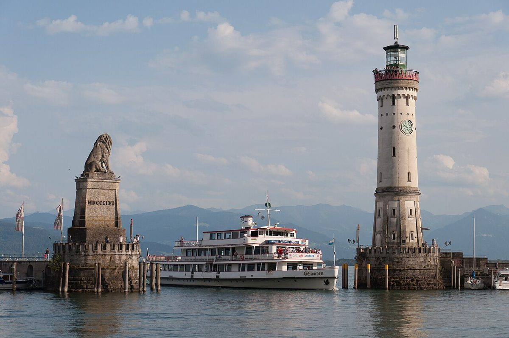

Discover the Beauty of Lake Constance: A Travel Guide

Lake Constance, known as Bodensee in German, is one of the most stunning destinations in Europe. Nestled between Germany, Austria, and Switzerland, this vast lake offers breathtaking landscapes, charming towns, and a wealth of activities for travelers. Whether you're into nature, history, or simply relaxing by the water, Lake Constance has something for everyone.
Getting There
Lake Constance is easily accessible by various means of transportation. If you're flying in, the nearest airports are Friedrichshafen (Germany) and Zurich (Switzerland). From there, you can take a train or rent a car to reach the lake. The region is also well-connected by train, with major cities like Munich and Stuttgart offering direct routes. Driving is another great option, as the scenic routes around the lake are a delight.
Best Time to Visit
The best time to visit Lake Constance is from late spring to early autumn (May to September). During these months, the weather is pleasant, and you can enjoy outdoor activities like swimming, cycling, and boat trips. The summer months are particularly lively, with festivals and events taking place around the lake. If you prefer a quieter experience, consider visiting in the shoulder seasons (April or October), when the crowds are thinner but the scenery is still beautiful.
Top Highlights
1. Mainau Island - Often called the "Flower Island," Mainau is a paradise for nature lovers. The island features stunning gardens, a butterfly house, and panoramic views of the lake. It's perfect for a leisurely stroll or a picnic.
2. Konstanz - This vibrant university town is the largest on the lake. Explore the charming old town, visit the impressive Konstanz Cathedral, or take a boat trip to the nearby Rhine Falls.
3. Meersburg - A picturesque medieval town with a well-preserved castle, Meersburg is a must-visit. Wander through its cobbled streets, enjoy wine from local vineyards, and soak in the historic atmosphere.
4. Lindau - Located on an island, Lindau is known for its charming harbor, lighthouse, and Bavarian architecture. Don't miss the stunning views of the Alps from the lakeside promenade.
5. Pfänder Mountain - Take a cable car up Pfänder Mountain for breathtaking views of Lake Constance and the surrounding Alps. It's a great spot for hiking or simply enjoying the scenery.
Local Cuisine
Lake Constance is a food lover's delight, offering fresh local produce and traditional dishes. Try the Fischbrötchen (fish sandwich) made with freshly caught lake fish, or sample the region's famous white asparagus in spring. Don't miss out on Swabian specialties like Maultaschen (German dumplings) or Kässpätzle (cheesy noodles). Pair your meal with a glass of local wine, as the region is known for its excellent vineyards.
Whether you're exploring historic towns, relaxing by the water, or indulging in delicious food, Lake Constance promises an unforgettable travel experience. Pack your bags and get ready to discover this gem in the heart of Europe!
Haiktec
- NRW Family Trip Budget Planner & Expense Tracker
- Bavarian Alps Family Adventures: 7 Unique Day Trips for Kids & Parents
- Berlin & Potsdam Travel Budget Planner & Itinerary Tracker for Women
Text mit KI erstellt und automatisch geprueft.